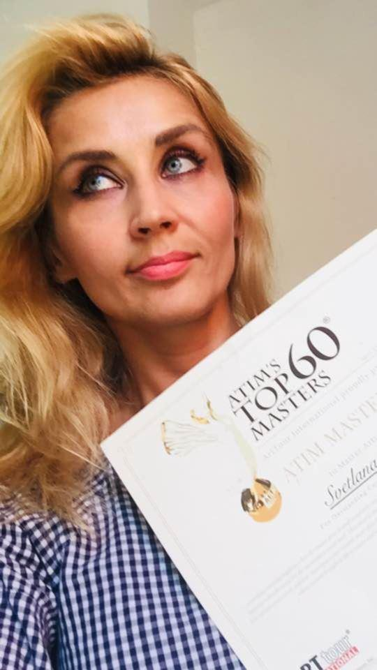
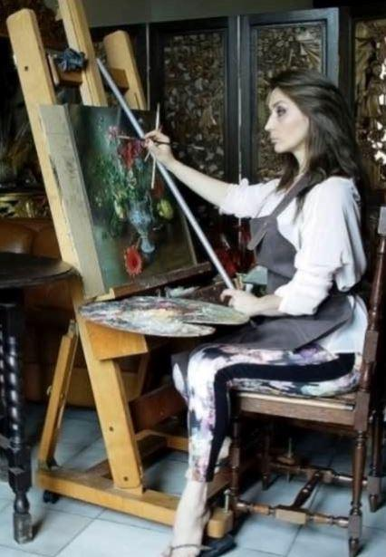
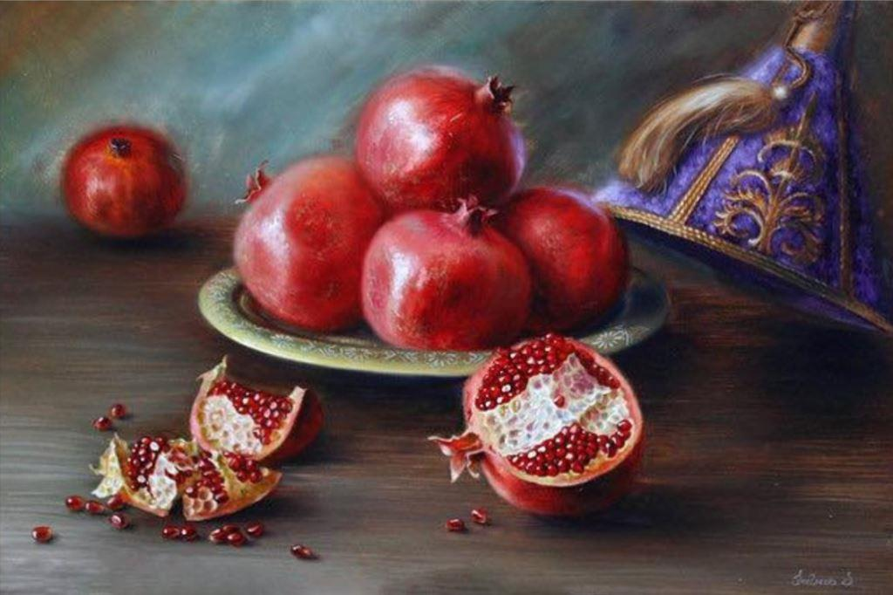
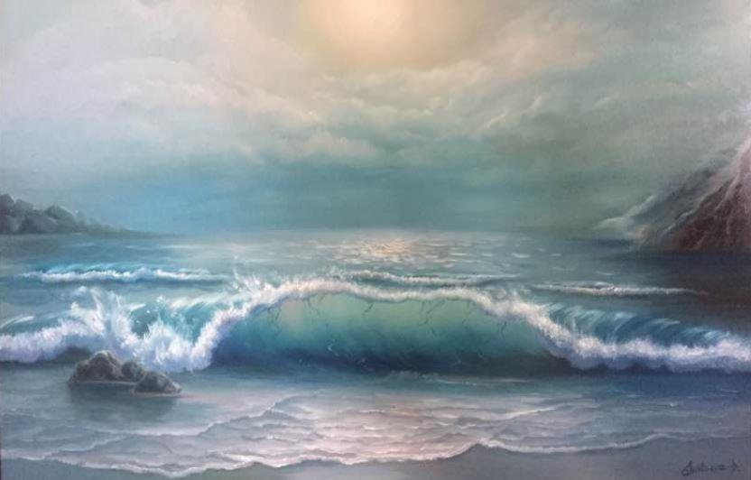
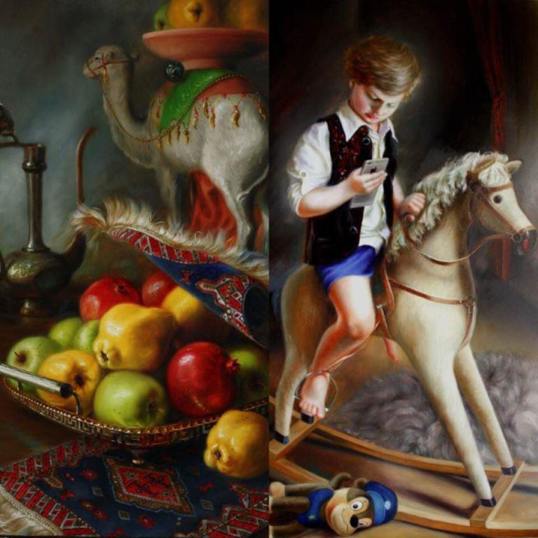
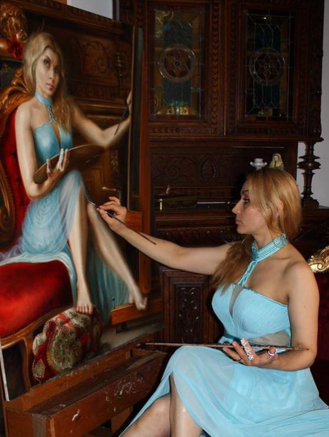
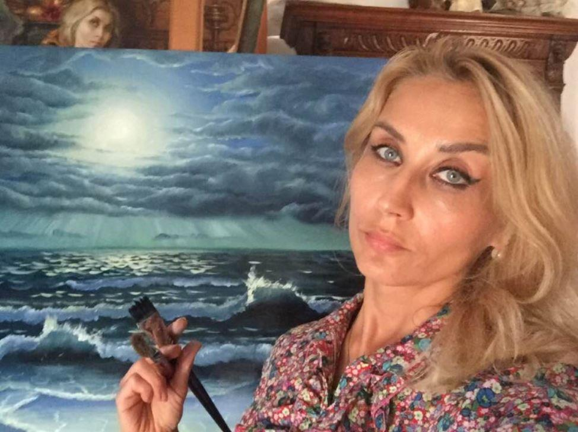
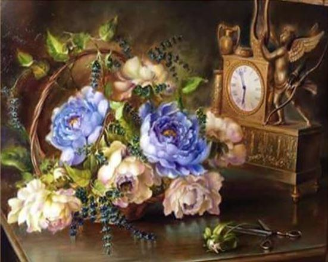
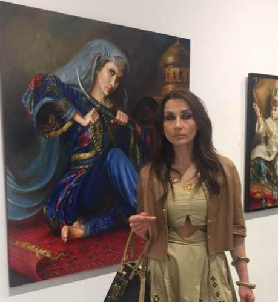
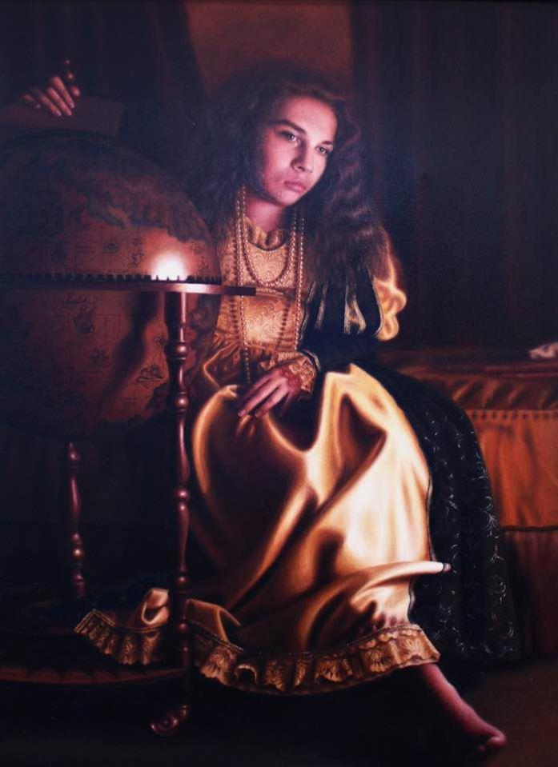

Fin juillet de cette année, Svetlana Vladimirovna Sintseva (Spassk-Dalni1, 17 mars 1975) était conviée à New-York, à la prestigieuse galerie Agora2, elle a reçu le Prix de l’ « Atim’s Top 60 Masters 2018 », qui la classe parmi les soixante meilleurs artistes contemporains. Depuis sa plus tendre enfance, elle s’intéresse à l’art, à la peinture en particulier. Cette passion dévorante et un talent exceptionnel ont contribué à lui assurer l’adhésion sans faille du public et les honneurs de la critique.
Elle a peu connu sa ville natale : à l’âge de trois ans, elle déménage avec sa famille à Penza, une ville de 500.000 habitants située à 600 km au sud-est de Moscou. Elle y suit des cours à l’Académie Savitsky des Beaux-Arts (Художетвеная Школа имени Савицково)3 de la ville de 1985 à 1990 et par la suite, elle fait de brillantes études à l’école d’architecture (Ментсенский Архитектурни-Стротелной Колеж) de 1990 à 1994. Elle participe à de nombreux concours artistiques et y remporte régulièrement des prix.
Elle y poursuit ses études à l’Université jusqu’en 1997 (Ментсенский Архитектурни-Стротелной Университет) et fut l’élève d’Alfred Oja4. Elle s’installe en Belgique avec sa famille en 1997, dans la région d’Ypres5. Elle continue à développer son talent, améliore sa technique en visitant avec enthousiasme les musées, expositions et galeries d’art. Ses découvertes picturales lui permettent de développer son style propre.
En 2009, elle monte une exposition personnelle à la galerie d’art « Esschius » à Diest6. Elle y rencontre le peintre Hans Laaglaand7, artiste baroque de renommée mondiale. Elle a poursuivi sa formation à l’Académie qu’il a fondée (Hans Laaglaand Masterclass), entre 2010 et 2012 où s’est montrée une élève particulièrement talentueuse. Enfin de 2015 à 2017, elle étudie la restauration de tableaux à l’Académie des Beaux-Arts d’Anderlecht (Bruxelles). D’autres expositions personnelles8 suivront, entre autre au Centre culturel et scientifique de Russie en juillet 2014.
Les sources d’inspiration de Svetlana V. Sintseva s’étendent de l’Atlantique à l’Extrême-Orient. Cette variété d’influences, soigneusement dosées au gré de son imagination donne un cachet particulier à ses toiles. Elles sont reconnaissables entre mille, attirent immanquablement la curiosité du spectateur, fascinent par le jeu enchanteur d’ombre et de lumières (qui n’est pas sans rappeler Rembrandt ou, plus encore, Rubens).
Le réalisme de ses œuvres est également à souligner : le spectateur d’une de ses natures mortes représentant une coupe de fruits aurait presque envie de tendre la main pour en saisir un… si ce n’est qu’il en serait dissuadé par la présence incongrue d’un petit iguane dans le coin inférieur droit du tableau, le petit saurien convoitant également la coupe de fruits (« Les Grenades »)9.
Svetlana V. Sintseva est principalement attirée par les natures mortes, les portraits et – dans une moindre mesure – par les paysages. Ses toiles baignent dans une atmosphère de douce nostalgie où des objets précieux sont disposés avec soin sur des nappes dont la couleur dominante est le rouge : « couleur des conquérants, des vainqueurs, des personnes opiniâtres auxquels il vaut mieux ne pas tenter de barrer le chemin », aime-t-elle préciser. Dans ces tableaux, on trouve des colliers de perles s’échappant d’une boîte à bijoux richement décorée (« Boîte à bijoux »), des statuettes en jade (« La Lanterne et l’éléphant »), des éventails en ivoire et des poupées en porcelaine richement vêtues (« Les Poupées à l’ombrelle »), un chérubin doré posé sur des nappes rappelant les châles d’Orenbourg (« l’Ange »). On pourrait se croire chez un antiquaire des quartiers huppés ou dans la maison d’une vieille famille aisée, dans laquelle chaque objet a son histoire à raconter.
En matière de portraits, il s’agit d’une affaire de famille ! Les modèles de Svetlana sont entre autre son fils Viktor et sa fille Nadia. La première pose avec son petit chien, engin intergalactique « vintage » à la main (« Victor et le chien »), ou se balance sur un antique cheval à bascule avec, à ses pieds, une marionnette en bois délaissée au profit de son fier destrier... (« Victor »), mais, ajoutant une touche de modernité, l’artiste le représente absorbé par son IPhone. Notons aussi le portrait de sa fille, plongée dans ses pensées et baignant dans une lumière envoûtante (« Nadia »).
Svetlana a également réalisé des portraits de jeunes femmes, à la beauté quasi-surnaturelle et un saisissant autoportrait la représentant pinceau à la main, en train de peindre son reflet dans le miroir (« Autoportrait à la robe bleue »).
Chose surprenante, l’artiste travaille rarement sur base de photographies : la plupart de ses peintures sont réalisées au gré de ses souvenirs et de son imagination. Une de ses œuvres les plus récentes, une marine aux vagues écumantes, au ciel lourd de menace a été peinte dans son atelier. Pour elle, une photo ne représente pas la réalité, mais la capture d’un instant. Pour les portraits, elle évite les longues séances de pose, inconfortables pour le modèle. D’autre part, celui-ci posant, il risque de perdre sa spontanéité et de donner une image tronquée de lui.
Une des principales motivations de Svetlana V. Sintseva dans l’exercice de son art est de faire passer des émotions, souvent d’une façon allégorique. Ainsi un bouquet de fleurs est posé sur une table. Le seul bouton de fleur a été coupé et la paire de ciseaux est posée à côté. Derrière l’apparente banalité de cette nature morte se cache un moment difficile dans la vie d’une mère : le départ de sa fille du cocon familial. Aussi deux portraits féminins : une farouche guerrière, sortie tout droit d’un conte des « Mille et une nuits » semble regarder le spectateur tout en dégainant un cimeterre (« La Guerrière ») ; ou alors « La Femme au masque », face à un miroir mural et qui a jeté son miroir à main au sol. Dans la première, Svetlana fait passer sa frustration d’être immobilisée par un plâtre suite à une fracture. L’autre symbolise le mélange d’admiration et de répulsion que peut susciter notre reflet.
Depuis 2012, de nombreuses expositions collectives la font connaître d’un public avisé : en Flandre Diest, Gand, Courtrai), aux Pays-Bas (Amsterdam, Haarlem, Rotterdam, Terneuzen) mais également bien au-delà : Rome, New-York City ou à la Tokyo International Art Fair en 2016.
2018 est l’année de la consécration pour l’artiste : Elle reçoit l’« Atim’s Top 60 Masters of Contemporary Art » (Galerie Agora, en collaboration avec le Museum of Contemporary Art of New-York), mais aussi le « Prix International Jules César, Empereur des arts » à Rome, le « Prix International Raphaël » à Bologne, le Prix international « Hommage à Le Titien » à Venise et le Prix International « Léonard de Vinci » à Florence.
Depuis un demi-siècle, le règne de la médiocrité s’impose en Europe occidentale, et ce dans tous les domaines : dans celui de l’Art, quand un abruti lance un pot de peinture sur une toile et que les critiques crient au chef d’œuvre ; dans celui de la musique, quand des délinquants notoires crachent leur rap haineux ; dans celui de la politique, où le seul souci des élus est de conserver leur poste. Dans celui des mœurs, où tout est permis, et même encouragé au nom de la tolérance.
Remercions ici Svetlana Vladimirovna : son œuvre nous rassure en nous prouvant que la médiocrité, la mesquinerie et la laideur n’ont pas gagné leur combat contre le talent, l’effort et la beauté.
J-L. E.
Notes :
1 Ville de 40.000 habitants située à 180 km de Vladivostok. Elle est desservie par le Transsibérien.
2 Fondée en 1984, la galerie Agora est une galerie d'art contemporain dédiée à la promotion d'artistes pouvant intéresser le marché de l'art New Yorkais. Elle possède un site de vente d'œuvres d'art (www.ARTmine.com) et édite un magazine d'art bi-annuel (www.ARTisSpectrum.com)
3 L’Académie des Beaux-Arts de Penza a été fondée en 1898 par le gouverneur de la ville, N. Seliverstov et son ami P. Semenov-Tanshanski. Le premier directeur – et le plus célèbre – est Konstantin Savitsky qui lui a donné son nom.
4 Alfred Alfredovitch Oja (1924-2000) était un peintre russo- estonien. En 1939, il a commencé à étudier à l'école d'art de Penza, études interrompues par la Grande Guerre Patriotique durant laquelle il fut sérieusement blessé lors des combats. Après une longue convalescence, il reprend ses études en 1946. Il a étudié également l'art dramatique et est devenu illustrateur, graphiste, sculpteur et créateur de mosaïques. Sa première exposition date de 1957. L’année suivante, Il a remporté la médaille d'argent à l'Exposition Universelle de Bruxelles. Il a terminé sa carrière en tant que professeur d'art à Penza. Ses œuvres sont exposées dans les musées de nombreux pays. Son art monumental patriotique est visible à Penza.
5 Ypres (Ieper en néerlandais): ville de la province de Flandre occidentale. Elle fut le théâtre de terribles combats durant la Première Guerre mondiale, de bâtiments historiques ont été reconstruits à l’identique. Connue également pour la traditionnelle « Fête des chats » (Kattenfeest).
6 Diest: Ville de la province du Brabant flamand (24.000 habitants) qui fut un des fiefs de la dynastie d’Orange.
7 Hans Laaglaand (1965). Fils du peintre Ludo Laagland (1923-2006), fondateur de l’Académie qui porte son nom. Peintre autodidacte et précoce (peinture à l’huile à l’âge de dix ans). Restaurateur de tableaux au Rijksmuseum d’Amsterdam. Connu pour ses natures mortes baroques, il est également portraitiste.
8 Pour plus de renseignement sur la carrière de l’artiste : https://www.sintseva-art.com/about
9 Ces huiles sur toile sont visibles sur le site de l’artiste : https://www.sintseva-art.com/
À consulter :
Site de l’artiste : https://www.sintseva-art.com/
Facebook : Svetlana Sintseva
Instagram : sintsevaart
Youtube : « Spotlight on Agora Artist: Svetlana Sintseva »
Partager cette page